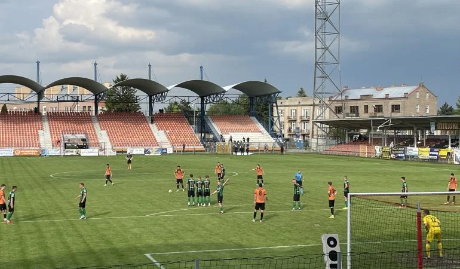
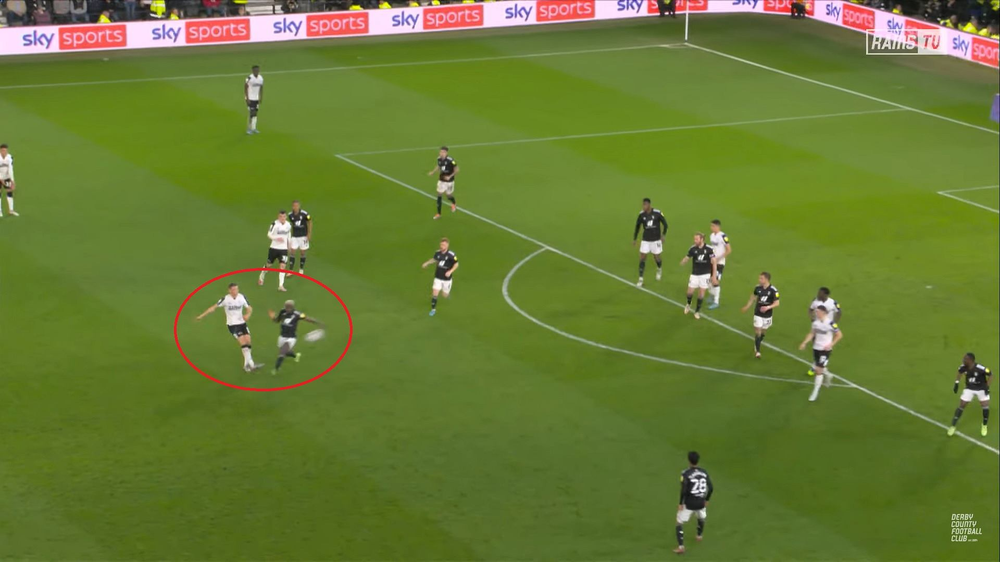

Wielka niespodzianka w naszym mieście! Wczorajsze Derby Piłki Nożnej przejdą do historii jako dzień, w którym teoretycznie słabszy zespół pokonał niekwestionowanego lidera ligi wynikiem 2:1. Mecz, rozegrany na wypełnionym po brzegi stadionie przy ul. Sportowej, dostarczył kibicom emocji do samego końca.
Spotkanie od pierwszego gwizdka toczyło się pod dyktando gości, czyli liderującej drużyny. Choć to oni częściej utrzymywali się przy piłce i konstruowali ataki, defensywa gospodarzy była niezwykle zdyscyplinowana, nie pozwalając na stworzenie klarownych okazji. W pierwszej połowie kibice nie doczekali się bramek, a na przerwę oba zespoły schodziły przy wyniku 0:0.

Po zmianie stron to miejscowi przejęli inicjatywę, zyskując pewność siebie. Efektem tej determinacji była bramka na 1:0 w 55. minucie. Wyczerpujące ataki nareszcie przyniosły skutek, wprawiając trybuny w euforię.
Lider jednak szybko otrząsnął się z szoku. Po zaledwie dziesięciu minutach, w 65. minucie, doprowadzili do wyrównania po sprytnie rozegranym rzucie rożnym, wprowadzając nerwową ciszę na stadionie. Wydawało się, że bardziej doświadczony lider przejmie teraz kontrolę i powróci do swojej dominującej gry.
Minuty Finałowe: Kontra, która Zmieniła Wszystko
Ostatnie 20 minut to istna wojna nerwów, pełna twardej walki w środku pola i szybkich wymian. Kiedy wszyscy szykowali się już na sprawiedliwy remis, a zegar wskazywał 89. minutę, doszło do kluczowego momentu: